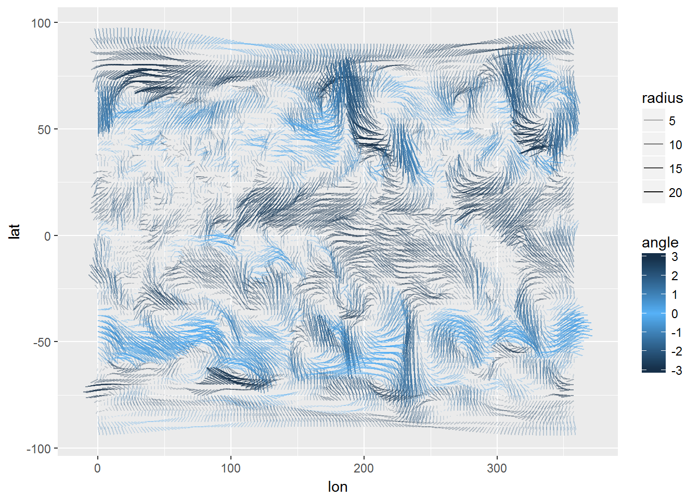
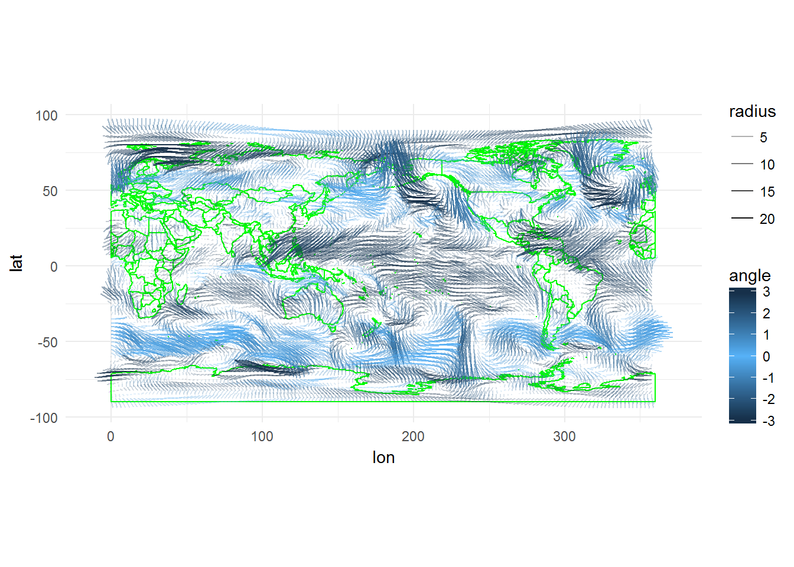
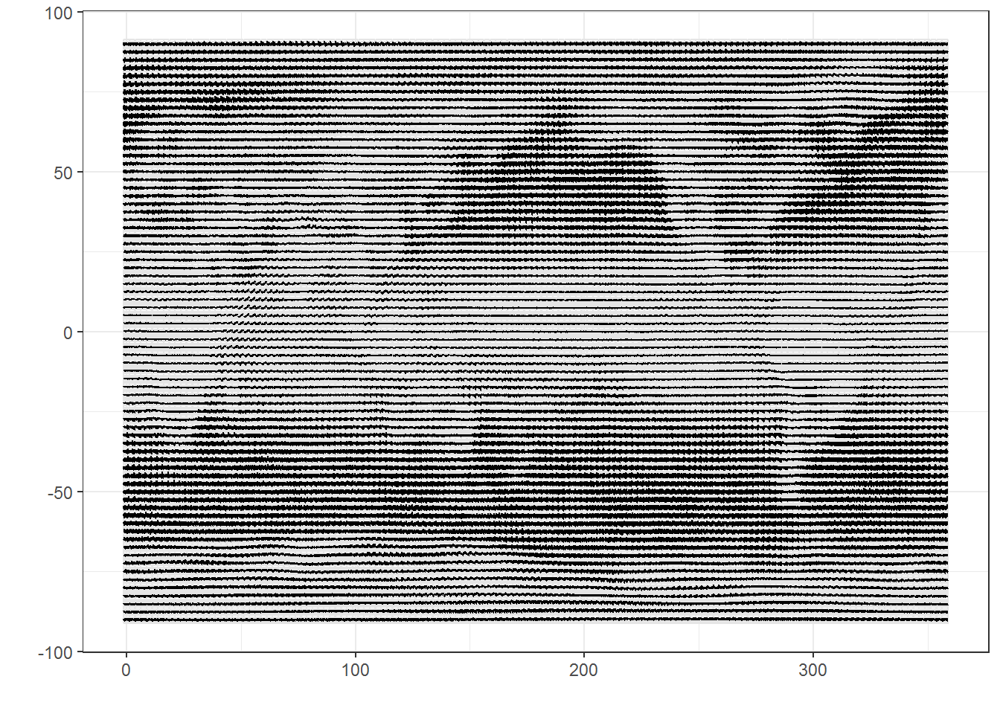
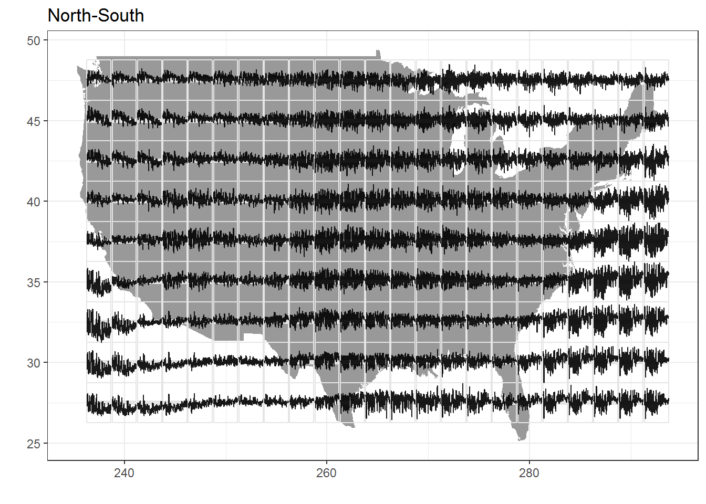
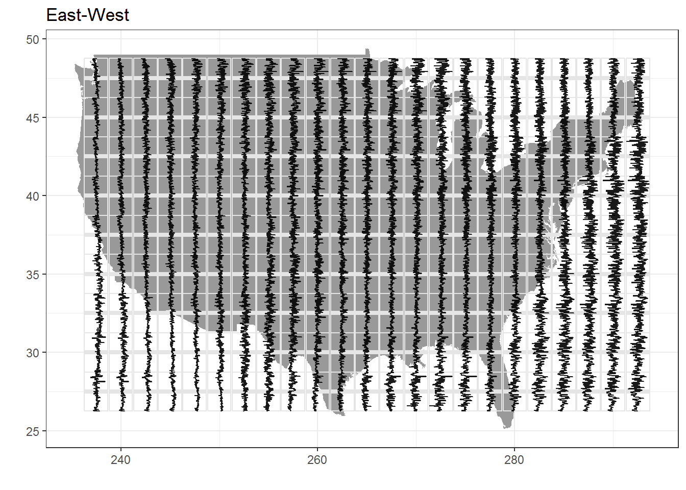

Lecture 7 Spatial Visualizations
7.1 Data
The data for this class will come from the National Oceanic and Atmospheric Administration (NOAA) U.S. Wind Climatology datasets (https://www.ncdc.noaa.gov/societal-impacts/wind/).
Download the files for both the u-component and the v-component of the wind data. To open these files in R, we’ll need to install the ncdf4 package, which provides an interface to Unidata’s netCDF data file format:
install.packages(c("ncdf4", "ncdf4.helpers", "PCICt"))library(tidyverse)Let’s load up the u-component file first:
library(ncdf4)
uwnd_nc <- nc_open("data/uwnd.sig995.2017.nc")
uwnd_nc## File data/uwnd.sig995.2017.nc (NC_FORMAT_NETCDF4_CLASSIC):
##
## 2 variables (excluding dimension variables):
## float uwnd[lon,lat,time]
## long_name: mean Daily u-wind at sigma level 995
## units: m/s
## precision: 2
## least_significant_digit: 1
## GRIB_id: 33
## GRIB_name: UGRD
## var_desc: u-wind
## dataset: NCEP Reanalysis Daily Averages
## level_desc: Surface
## statistic: Mean
## parent_stat: Individual Obs
## missing_value: -9.96920996838687e+36
## valid_range: -102.199996948242
## valid_range: 102.199996948242
## actual_range: -26.9250011444092
## actual_range: 29.8999996185303
## double time_bnds[nbnds,time]
##
## 4 dimensions:
## lat Size:73
## units: degrees_north
## actual_range: 90
## actual_range: -90
## long_name: Latitude
## standard_name: latitude
## axis: Y
## lon Size:144
## units: degrees_east
## long_name: Longitude
## actual_range: 0
## actual_range: 357.5
## standard_name: longitude
## axis: X
## time Size:198 *** is unlimited ***
## long_name: Time
## delta_t: 0000-00-01 00:00:00
## standard_name: time
## axis: T
## units: hours since 1800-01-01 00:00:0.0
## avg_period: 0000-00-01 00:00:00
## coordinate_defines: start
## actual_range: 1902192
## actual_range: 1906920
## nbnds Size:2
##
## 8 global attributes:
## _NCProperties: version=1|netcdflibversion=4.4.1|hdf5libversion=1.8.16
## Conventions: COARDS
## title: mean daily NMC reanalysis (2014)
## history: created 2013/12 by Hoop (netCDF2.3)
## description: Data is from NMC initialized reanalysis
## (4x/day). These are the 0.9950 sigma level values.
## platform: Model
## References: http://www.esrl.noaa.gov/psd/data/gridded/data.ncep.reanalysis.html
## dataset_title: NCEP-NCAR Reanalysis 1Let’s store the uwnd observations in the netCDF file for the u-component:
## packages for getting nice time variables from the netCDF file
library(ncdf4.helpers)
library(PCICt)
uwnd <- ncvar_get(uwnd_nc, "uwnd")
uwnd_time <- nc.get.time.series(uwnd_nc, v = "uwnd", time.dim.name = "time")
uwnd_lon <- ncvar_get(uwnd_nc, "lon")
uwnd_lat <- ncvar_get(uwnd_nc, "lat")
nc_close(uwnd_nc)
uwnd_df <- uwnd %>%
as.data.frame.table(responseName = "uwnd", stringsAsFactors = FALSE) %>%
rename(a = Var1, b = Var2, c = Var3) %>%
cbind.data.frame(expand.grid(uwnd_lon, uwnd_lat, uwnd_time)) %>%
rename(lon = Var1, lat = Var2, time = Var3) %>%
dplyr::select(lon, lat, time, uwnd)
uwnd_df %>% as.tibble()## # A tibble: 2,081,376 x 4
## lon lat time uwnd
## <dbl> <dbl> <S3: PCICt> <dbl>
## 1 0.0 90 2017-01-01 -2.29999971
## 2 2.5 90 2017-01-01 -1.99999964
## 3 5.0 90 2017-01-01 -1.69999957
## 4 7.5 90 2017-01-01 -1.34999967
## 5 10.0 90 2017-01-01 -1.02499962
## 6 12.5 90 2017-01-01 -0.72499961
## 7 15.0 90 2017-01-01 -0.39999962
## 8 17.5 90 2017-01-01 -0.04999962
## 9 20.0 90 2017-01-01 0.27500039
## 10 22.5 90 2017-01-01 0.60000038
## # ... with 2,081,366 more rowsNow we need to do the same for the v-component of the wind vectors. Since we know the lat, lon, and time dimensions are repeated, we can join directly to the previous data.frame:
vwnd_nc <- nc_open("data/vwnd.sig995.2017.nc")
vwnd <- ncvar_get(vwnd_nc, "vwnd")
vwnd_time <- nc.get.time.series(vwnd_nc, v = "vwnd", time.dim.name = "time")
vwnd_lon <- ncvar_get(vwnd_nc, "lon")
vwnd_lat <- ncvar_get(vwnd_nc, "lat")
nc_close(vwnd_nc)
wind <- vwnd %>%
as.data.frame.table(responseName = "vwnd", stringsAsFactors = FALSE) %>%
cbind.data.frame(uwnd_df) %>%
rename(lon2 = Var1, lat2 = Var2, time2 = Var3) %>%
select(lon, lat, time, vwnd, uwnd)
wind %>% as.tibble()## # A tibble: 2,081,376 x 5
## lon lat time vwnd uwnd
## <dbl> <dbl> <S3: PCICt> <dbl> <dbl>
## 1 0.0 90 2017-01-01 7.150002 -2.29999971
## 2 2.5 90 2017-01-01 7.250002 -1.99999964
## 3 5.0 90 2017-01-01 7.350002 -1.69999957
## 4 7.5 90 2017-01-01 7.375001 -1.34999967
## 5 10.0 90 2017-01-01 7.475002 -1.02499962
## 6 12.5 90 2017-01-01 7.475002 -0.72499961
## 7 15.0 90 2017-01-01 7.525002 -0.39999962
## 8 17.5 90 2017-01-01 7.550002 -0.04999962
## 9 20.0 90 2017-01-01 7.550002 0.27500039
## 10 22.5 90 2017-01-01 7.525002 0.60000038
## # ... with 2,081,366 more rowsOtherwise, we would need to merge these data.frames to get uwnd and vwnd together with the following, which takes long time to run:
wind <- merge(uwnd_df, vwnd_df)7.2 geom_spoke
To represent these wind vectors we’ll use the geom_spoke(). We’ll start just plotting wind patterns for January 1, 2017:
wind <- wind %>%
mutate(angle = atan2(vwnd, uwnd), radius = sqrt(uwnd^2 + vwnd^2), time = as.POSIXct(time))
wind %>%
filter(time == as.POSIXct("2017-01-01", tz = "GMT")) %>%
ggplot(aes(lon, lat)) +
geom_spoke(aes(angle = angle, radius = radius, alpha = radius, color = angle)) +
scale_color_gradient2(low = "#132B43", mid = "#56B1F7", high = "#132B43")
7.3 maps
install.packages("maps")Map data will help to provide some context to this wind figure. We’ll use geom_polygon to plot the world centered on the Pacific Ocean (world2) using the map_data() function.
world <- map_data("world2")
wind %>%
filter(time == as.POSIXct("2017-01-01", tz = "GMT")) %>%
ggplot(aes(lon, lat)) +
geom_polygon(data = world, aes(x=long, y = lat, group = group), color = "green", fill = NA) +
coord_fixed(1) +
geom_spoke(aes(angle = angle, radius = radius, alpha = radius, color = angle)) +
scale_color_gradient2(low = "#132B43", mid = "#56B1F7", high = "#132B43") +
theme_minimal()
7.4 gganimate
The gganimate package lets us animate the above chart. If you want to be able to save animations as an mp4, you will need install ffmpeg (https://www.ffmpeg.org/download.html). If you are running macOS, you will need also need ImageMagick (http://www.imagemagick.org/script/binary-releases.php#macosx).
You can install gganimate with devtools:
devtools::install_github("dgrtwo/gganimate")library(gganimate)
f <- wind %>%
ggplot(aes(lon, lat)) +
geom_polygon(data = world, aes(x=long, y = lat, group = group), color = "green", fill = NA) +
coord_fixed(1) +
geom_spoke(aes(angle = angle, radius = radius, alpha = radius, color = angle, frame = time)) +
scale_color_gradient2(low = "#132B43", mid = "#56B1F7", high = "#132B43") +
theme_minimal()
gganimate(f)7.5 glyphs
glyphs provide another useful way of analyzing spatial data with a time dimesion. This shows a tiny line charts representing the north-south component of the wind at each longitude/latitude combination.
library(GGally)
wind$day <- as.numeric(julian(wind$time, as.POSIXct("2017-01-01", tz = "GMT")))
wind$day_flip <- -wind$day
vwnd_gly <- glyphs(wind, "lon", "day", "lat", "vwnd", height=2.5)
uwnd_gly <- glyphs(wind, "lon", "day", "lat", "uwnd", height=2.5)
ggplot(vwnd_gly, aes(gx, gy, group = gid)) +
add_ref_lines(vwnd_gly, color = "grey90") +
add_ref_boxes(vwnd_gly, color = "grey90") +
geom_path() +
theme_bw() +
labs(x = "", y = "")
Let’s focus in on just the continental US:
usa <- map_data("usa")
usa_long_range <- range(usa$long)
usa_lat_range <- range(usa$lat)
usa_wind <- wind %>%
filter(lon >= (usa_long_range[1] %% 360) & lon <= (usa_long_range[2] %% 360) &
lat >= usa_lat_range[1] & lat <= usa_lat_range[2])
usa_wind$day <- as.numeric(julian(usa_wind$time, as.POSIXct("2017-01-01", tz = "GMT")))
usa_wind$day_flip <- -usa_wind$day
usa_vwnd_gly <- glyphs(usa_wind, "lon", "day", "lat", "vwnd", height=2.5)
usa_uwnd_gly <- glyphs(usa_wind, "lon", "uwnd", "lat", "day_flip", height=2.5)
ggplot(usa_vwnd_gly, aes(gx, gy, group = gid)) +
geom_polygon(data = usa, aes(x = long %% 360, y = lat %% 360, group = group), fill = "grey60") +
add_ref_lines(usa_vwnd_gly, color = "grey90") +
add_ref_boxes(usa_vwnd_gly, color = "grey90") +
geom_path(alpha = 0.9) +
theme_bw() +
labs(x = "", y = "", title = "North-South")
ggplot(usa_uwnd_gly, aes(gx, gy, group = gid)) +
geom_polygon(data = usa, aes(x = long %% 360, y = lat %% 360, group = group), fill = "grey60") +
add_ref_lines(usa_uwnd_gly, color = "grey90") +
add_ref_boxes(usa_uwnd_gly, color = "grey90") +
geom_path(alpha = 0.9) +
theme_bw() +
labs(x = "", y = "", title = "East-West")